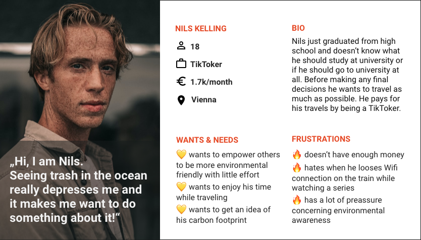

Application for the ÖBB - Austrian Railway Company
Context
This project was developed during my participation at the UX Design Bootcamp at Talent Garden Vienna. The ÖBB - Austiran Railway Compay cunducted market reseach showed that more people are taking the train with the incentive to conserve CO2, compaired to traveling by car or plane.The ÖBB wanted to invest in developing an innovative product solution, that will encourage the trend of taking the train for environmental reasons.
Duration
1 month
4 hours/day
Role
Research
Personas
Ideation
Usability testing
Low-fi/hi-fi UI
Team
4 fellow colleagues
Tools
Figma
Miro
Indesign
Draw.io
Problem
- how to encourage this trend
- raise awareness about the environment and strenghten the brand reputation
- address especially younger target groups
Solution
- gamification - user natures own "living" ecosystem
- CO2 tracking & visualisation of saved CO2/kg
- motivation factor: coupon and discount system
Research
The research process started off by a long brainstorm about who our client is and what this product wants to achieve, what the potential problems are that need solving, who are our competitors and what is our target group. We conducted several interviews to understand our users behavior and motivations as well as to test our assumptions.

Competitor
The competitor analyses revieled that the ÖBB already tried to solve this problem with a project in 2017 called 'Green Points'. The users reported difficulties with the Point system and the Application was shut down. We decided to study their case well and learn from their mistakes.
Market
- Generation Z: born 1997-2010
- 24% of global population
- about 12% of austrian population
- accounts for about 40% of global consumers
Target group
- focused on saving money
- mobile natives
- want experiences - not products
- interactive content
- love influencers
- 45% of Gen Zs are planning to prioritise sustainability over price
Target group interviews
From the inteviews we retrieved that all participants named the prices of the train rides as an issue. Therefore we needed to give them some financial insentive to still decide to take the train. Very intersting was that none of our participants actually knew how much one kg of CO2 is and how it scales. The results were combined and summerized in one persona - Nils.
Persona
Concept creation
After the interviews with our target group we decided on three major features we will implement in our app:
- A map, which informs the user about how much CO2 they personally save by using "green" alternatives for their travels.
- Another feature makes use of gamification and engages the user by making the user nurture its own living digital ecosystem.
- By implementing our third feature, a coupon and discount system, we want to give the users another insentive to choose a train ride over other transportations.
CO2 Tracking based on green travel (train, bus,bike)
Nurture your own living ecosystem and make it grow

Unlock coupons & discounts as you save the environment!
Information architecture
Before we started prototyping we gathered our ideas and results from the user interviews to create an information architecture. Two examples below:
IA - log in/registration
IA - coupons
Wireframing & Prototyping
Throughout the whole Wireframing and Prototyping process we were making use of our prior created mood board on Miro. The first created low-fi prototype was with paper and pen. After an usability test we improved further and created a low-fi prototype in Figma.
Further testing helped finalize the high-fi interactive prototype in Figma.

Testing and Iteration
After creating an interactive Hi-Fi Prototype we went for another round of testing. We created many szenarios and tested them in person.

The main takeaway from the testing was to change the position of two buttons on the homepage, as 75% of users reported confusion in their specific function.
Design Solution
The final design solutions is engaging, fun, practical, informative and educational all in one. The app trackes the users usage of enviromental friendly transport and converts the km into saved kg of CO2.
Log in/ register
After the loading page, users have to log in or register for app access. Since the app is mainly designed for the austrian rail way company ÖBB, we decided to highlight the option to register with an already exiciting ÖBB account.
Other options include the registration with a facebook or gmail account.
After logging in the user has access to the main dashboard. To add some personal touch, the users is welcomed with some greetings.
On the main dashboard
the user sees his current progress of saved CO2 per kg, the current level, the progress of the users personal living organisam, a travel button and a coupon button.
Coupons/ discounts
On the main dashboard the user can access the coupon section via the coupon button or through the menue. For each level the user can unlock coupons and redeem them any time. Once the coupon is activated the user has 5 minutes to redeem it and then it can not be reused.

CO2 animation
The app trackes the users usage of enviromental friendly transport and converts the km into saved kg of CO2.
Travel information
After clicking on the "My travel" button the user is asked to enter their travel destination and confirm it with the "OK" button. Now the user is presented with a map showing its current location and what interessting attractions are
along the way.
On the top a progress bar appears, showing the starting and end point of the journey, as well as its progress.
Now that the app knows the travel information of the user, the feature "Wake Me" is avalable
on the dashboard.
"Wake me"

With the "Wake Me" feature the user is able to set an alarm 5, 15 or 30 minutes before the arrival time. One click on the alarm clock icon opens the selection window to choose the wake-up time and the alarm is set. Another click on the alarm clock icon will inform the user that the alarm is set and give the option to reset it.
Refelection
- We went throught the entire design process and successfully created a new application prototype for the client. Hurray!
- Design and test and repeat. Continuous testing is essenatial for developing a successful product.
- Teamwork is the best! - Having opened and clear conversations helped us brainstorm and increase the quality of our work.